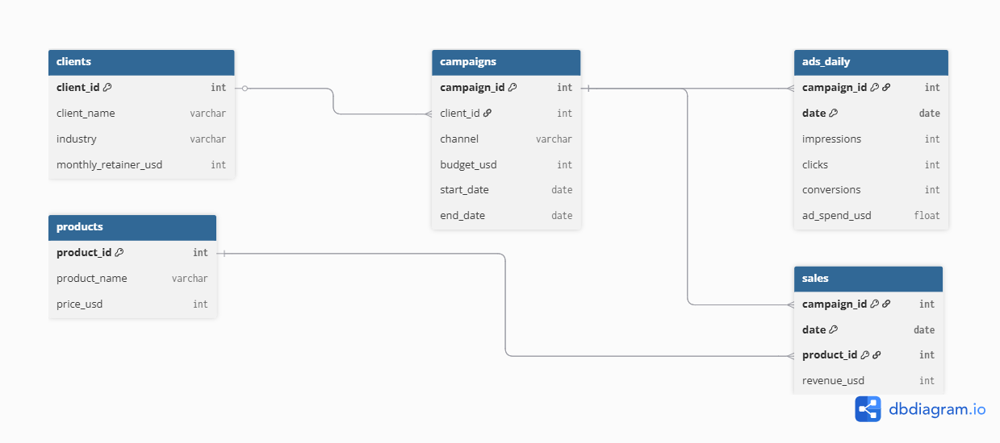
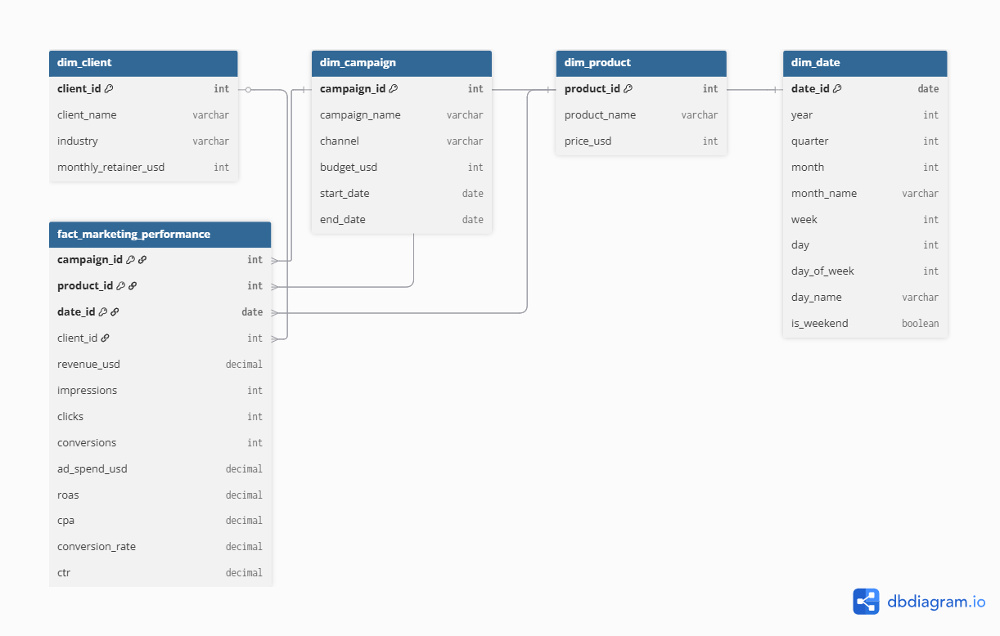

Resumen Ejecutivo
Objetivo del Proyecto
Diseñar y construir un modelo analítico completo para una agencia de marketing digital, incluyendo:
- Modelado relacional y esquema estrella optimizado
- Cálculo de métricas clave (ROAS, CPA, Conversion Rate)
- Dashboard interactivo en Looker Studio
- Análisis estratégico con insights accionables
Arquitectura Implementada
Bronze Layer: Datos crudos desde Cloud Storage
Silver Layer: Limpieza y normalización
Gold Layer: Modelo estrella optimizado
Visualización: Dashboards en Looker Studio
Stack Tecnológico
Infraestructura
- Google Cloud Storage
- BigQuery
Procesamiento
- SQL (BigQuery)
- Arquitectura Medallón
Fase 1: Modelado Técnico
1. Análisis de Estructura de Datos
Tablas Dimensionales
- clients: 5 registros, 4 columnas
- campaigns: 15 registros, 6 columnas
- products: 10 registros, 3 columnas
Tablas de Hechos
- sales: 9,134 registros, 4 columnas
- ads_daily: 465 registros, 6 columnas
2. Modelo Relacional
Relaciones identificadas entre las tablas del sistema:

Cardinalidades:
- clients → campaigns: 1:N (Un cliente tiene múltiples campañas)
- campaigns → sales: 1:N (Una campaña genera múltiples ventas)
- campaigns → ads_daily: 1:N (Una campaña tiene datos diarios de ads)
- products → sales: 1:N (Un producto se vende en múltiples transacciones)
Llaves Primarias y Foráneas:
- PK Simples: client_id, campaign_id, product_id
- PK Compuestas: sales (campaign_id + date + product_id), ads_daily (campaign_id + date)
- FK: campaigns.client_id, sales.campaign_id, sales.product_id, ads_daily.campaign_id
3. Esquema Estrella (Star Schema)
Modelo dimensional optimizado para análisis de marketing:

💡 Justificación del Diseño:
- Tabla de Hechos Única: Combina métricas de ads y ventas por fecha y campaña
- Dimensión Fecha: Facilita análisis temporal (tendencias, estacionalidad)
- Dimensión Cliente: Referencia directa desde la tabla de hechos para consultas eficientes
- Métricas Calculadas: ROAS, CPA y Conversion Rate pre-calculados para performance
- Granularidad: Nivel diario por campaña y producto
4. Métricas Calculadas
Métricas Básicas:
- ROAS (Return on Ad Spend): revenue_usd / ad_spend_usd
- CPA (Cost Per Acquisition): ad_spend_usd / conversions
- Conversion Rate: (conversions / clicks) * 100
Métricas Avanzadas:
- ROAS por Cliente: Agregación a nivel cliente para comparativas
- CPA por Canal: Eficiencia de adquisición por tipo de canal
- CTR (Click-Through Rate): (clicks / impressions) * 100
- Revenue per Click: revenue_usd / clicks
5. Medidas Personalizadas
Métricas calculadas dinámicamente según diferentes dimensiones de análisis:
📈 ROAS Dinámico por Dimensión:
- ROAS por Cliente: Agregación de revenue y ad_spend a nivel cliente para identificar los clientes más rentables
- ROAS por Canal: Comparativa de eficiencia entre canales (Google Ads, Facebook, Instagram, etc.)
- ROAS por Producto: Identificar qué productos generan mejor retorno publicitario
- ROAS por Período: Análisis de tendencias temporales (mensual, trimestral)
💰 CPA Ajustado por Contexto:
- CPA por Canal: Costo de adquisición segmentado por canal de marketing
- CPA por Campaña: Eficiencia de cada campaña individual
- CPA Temporal: Variación del costo por conversión en diferentes períodos (fin de semana vs días laborables)
🎯 Métricas de Eficiencia Avanzadas:
- Costo Marginal por Conversión: Incremento en ad_spend necesario para obtener una conversión adicional
- Revenue per Impression: Ingresos generados por cada mil impresiones (RPM)
- Conversion Value: Valor promedio de cada conversión (revenue / conversions)
- Campaign Efficiency Score: Métrica combinada que pondera ROAS, CTR y Conversion Rate
💡 Nota: Estas métricas se calcularán dinámicamente en BigQuery y estarán disponibles en el dashboard de Looker Studio con filtros interactivos por cliente y canal.
6. Propuesta de Mejora Estructural
Problemas Detectados:
- Sales y Ads_Daily están separadas, dificultando análisis conjunto
- No existe dimensión de tiempo (fecha) estructurada
- Métricas calculadas en cada query (no pre-computadas)
- Falta información sobre cliente en las tablas de hechos (requiere múltiples joins)
Mejoras Implementadas en Gold Layer:
- Tabla de Hechos Unificada: Combina sales + ads_daily
- Dimensión Fecha: Tabla separada con atributos temporales
- Métricas Pre-calculadas: ROAS, CPA, CR almacenados
- Desnormalización Controlada: Incluir client_name en tabla de hechos para queries más rápidas
- Particionamiento por Fecha: Mejora performance en BigQuery
Fase 2: Análisis Estratégico e Insights
Contexto de Datos: Análisis basado en 73 días de histórico (6 Ene - 19 Mar 2024). Las conclusiones son válidas para este período pero se recomienda validar con datos de ciclo completo (12 meses).
Resumen Ejecutivo
| # |
Insight |
Criticidad |
Acción Inmediata |
| 1 |
ROAS Global Crítico (1.34) |
🔴 Alta |
Pausar campañas con ROAS <1.2 |
| 2 |
Todos los canales tienen ROAS bajo |
🟡 Media |
Optimización en todos los canales |
| 3 |
Email = Canal menos eficiente |
🟡 Media |
Limpieza de listas |
| 4 |
Alta concentración en 2 clientes |
🟠 Media |
Plan de adquisición + retención |
| 5 |
Histórico limitado (73 días) |
🟢 Baja |
Implementar tracking continuo 12 meses |
Hallazgo:
El ROAS promedio de 1.34 indica que por cada dólar invertido en publicidad, solo se genera $1.34 en revenue.
Esto deja un margen muy ajustado que probablemente no cubre costos operativos, productos y overhead.
• ROAS saludable para agencias digitales: 2.0 - 4.0
• ROAS actual: 1.34
• Gap: 0.66 puntos
Recomendaciones:
- Elevar ROAS a mínimo 2.0 (punto de break-even saludable)
- Pausar campañas con ROAS <1.2 (actualmente 3 campañas en este rango)
- Duplicar presupuesto en campañas con ROAS >1.5 (GREENMARKET+LinkedIn, FINEDGE+Facebook)
- Revisar pricing de productos para mejorar margen
⚠️ Riesgo si no se actúa:
• Continuar operando con pérdidas o márgenes insostenibles
• Agotamiento de presupuesto sin retorno suficiente
• Imposibilidad de escalar el negocio
Hallazgo:
Aunque LinkedIn lidera con ROAS 1.40, la diferencia con el peor canal (Email, 1.28) es de solo 9%.
Todos los canales tienen ROAS por debajo del umbral saludable (<2.0).
Análisis Comparativo por Canal:
| Canal |
ROAS |
Revenue |
% vs Promedio |
Estado |
| LinkedIn |
1.40 |
$502,799 |
+4.5% |
Mejor |
| Facebook |
1.36 |
$463,089 |
+1.5% |
Promedio |
| Google Ads |
1.30 |
$200,317 |
-3.0% |
Bajo promedio |
| Email |
1.28 |
$473,758 |
-4.5% |
Peor |
⚠️ Conclusión Crítica: La diferencia entre el mejor y peor canal es solo $0.12 por dólar invertido.
Esto sugiere un problema sistémico más que un problema de canal específico.
Recomendaciones:
- No reasignar presupuesto entre canales (diferencias muy pequeñas)
- Optimización transversal:
- Revisar segmentación de audiencias en TODOS los canales
- Mejorar creatividades y copy
- Optimizar landing pages y funnel de conversión
- Caso de estudio: Analizar por qué GREENMARKET+LinkedIn tiene ROAS 1.75 (vs promedio 1.40 del canal) y replicar tácticas
- Test de incrementalidad: Pausar temporalmente 1 canal para medir impacto real (no solo correlación)
Hallazgo:
Email tiene el peor ROAS (1.28) y alto revenue ($473,758), lo que indica volumen alto pero baja eficiencia.
A pesar de tener buen CTR (3.15%), no convierte eficientemente.
Conclusión: Email genera clicks pero no convierte en ventas rentables
Posibles Causas:
- Segmentación deficiente: Listas genéricas
- Calidad de leads: Alto CTR pero bajo intento de compra
- Mensajes genéricos: Falta de personalización por industria/producto
- Landing pages: Desconexión entre mensaje de email y página de destino
- Fatiga de audiencia: Over-mailing a mismas listas
Recomendaciones:
- Limpieza de listas:
- Remover suscriptores sin engagement en últimos 90 días
- Implementar re-engagement campaign antes de eliminar
- Pausar 2 campañas con menor ROAS (TECHNOVA Email, FINEDGE Email)
- Benchmark objetivo: ROAS email >1.5 (alineado con mejores canales)
⚠️ Riesgo si no se actúa:
• Continuar quemando presupuesto en canal ineficiente
• Deterioro de reputación de marca por sobre-comunicación
• Listas quemadas que pierden valor a largo plazo
Hallazgo:
El período analizado (6 Enero - 19 Marzo 2024, 73 días) no permite identificar patrones estacionales
ni tendencias de largo plazo. Todas las conclusiones son válidas solo para este período específico.
💡 Contexto Temporal:
• Período: Enero-Marzo (post-navidad, inicio de año fiscal)
• Puede haber sesgo por comportamiento típico de Q1
• Falta visibilidad de Q4 (temporada alta para retail/e-commerce)
⚠️ Riesgo si no se actúa:
• Tomar decisiones estratégicas sin contexto estacional completo
• Perder oportunidades de optimización por falta de histórico
• Incapacidad de predecir performance en temporadas clave
Resumen de Acciones Prioritarias
🔴 Acciones Inmediatas (Esta Semana):
- Pausar 3 campañas con ROAS <1.2
- Optimización de campañas de Email
- Configurar alertas de ROAS y CPA en BigQuery
🟡 Acciones a Corto Plazo (Próximas 2-4 Semanas):
- Análisis profundo de campaña GREENMARKET+LinkedIn (ROAS 1.75) para replicar tácticas
- Limpieza de listas de email y segmentación mejorada
- Iniciar programa de retención para top 2 clientes
- Optimización de landing pages y funnel de conversión
🟢 Acciones a Medio Plazo (1-3 Meses):
- Plan de adquisición de 2-3 clientes nuevos
- Acumular 6 meses de datos para análisis de tendencias
- Revisar y ajustar pricing de productos
Dashboards Interactivos
Dashboard Publicado: Panel analítico interactivo disponible en Looker Studio con datos actualizados desde BigQuery.
Marketing Performance Dashboard
Contenido del Dashboard:
- KPIs Principales: Revenue Total, ROAS Promedio, CPA Promedio, Total Conversiones
- ROAS y CTR por Canal: Gráfico combinado (barras + línea) comparando eficiencia de canales
- Top 10 Campañas por ROAS: Tabla con ranking de mejores campañas por rentabilidad
- Tendencia Temporal: Evolución diaria de Revenue vs Ad Spend (73 días)
- Performance por Cliente: Tabla comparativa de clientes por ROAS y volumen
Período de datos: 6 Enero - 19 Marzo 2024 (73 días) |
Última actualización: 27 Febrero 2026
Vistas BigQuery:
v_roas_by_channelv_campaign_performancev_roas_by_clientfact_marketing_performance
Vista Previa Interactiva
Explora el dashboard directamente desde esta página o ábrelo en una nueva pestaña para experiencia completa:
Tip: Para mejor experiencia, abre el dashboard en pantalla completa usando el botón de arriba.
Roadmap de Mejoras
🔜 Próximas Mejoras Planificadas:
- Alertas automáticas: Notificaciones cuando ROAS cae por debajo de 1.2
- Análisis YoY: Comparación año sobre año cuando haya 12+ meses de datos
- Modelo predictivo: Estimación de ROAS futuro basado en tendencias históricas
- Análisis de atribución multi-touch: Entender el journey completo del cliente
- Benchmarking de industria: Comparación con ROAS promedio del sector